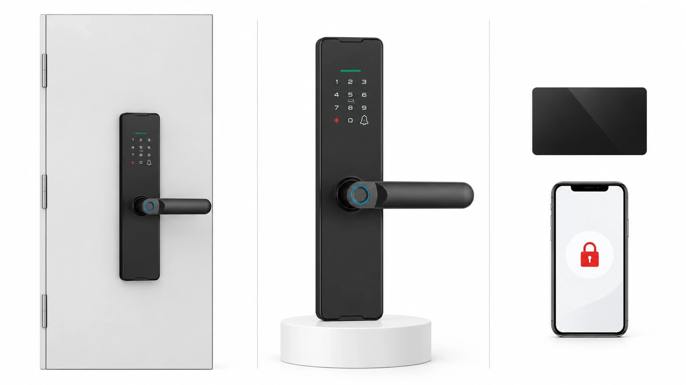
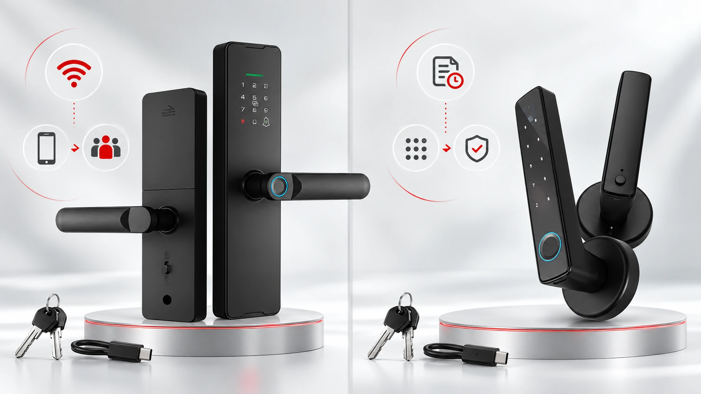
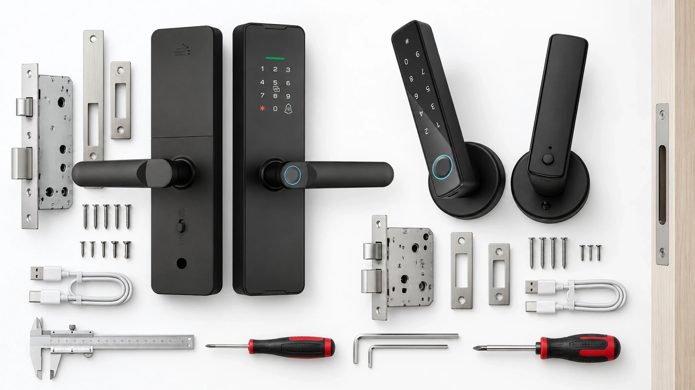

本文是项目规划指南，用于区分已确认型号资料和必须结合门体、软件版本及运营流程确认的项目事项。
酒店改造是否顺利，取决于每个门位的权限负责人、凭证生命周期和异常恢复流程。应结合实际门体与运营方式确认配置后再进入批量部署。
1. 先定义改造简报
不要从需要多少把锁开始，而要先建立门位清单。记录门材质、门厚、开门方向、现有锁体、门框状态，以及是否允许打孔或更换锁体；同时明确住客、保洁、维修、管理人员和应急人员如何获得、使用、撤销和恢复访问。
选择样品前，应为每个未确认事项指定唯一负责人。简报要把已确认型号能力与项目希望实现的运营流程分开，避免报价和验收记录把项目假设默认为已交付功能。
2. 先按门位建立清单
客房、后勤门和公共区域的权限需求不同。每个门位都应记录使用频率、网络条件、供电方式、应急开门方法和维护频率。消防、疏散、当地法规、实际门体兼容性及断网策略必须由项目团队确认。

每个门位单独建行，而不是只按房型归类。标记住客门、员工门和共享门，并记录会改变异常处理的条件，例如机械钥匙、电池维护、网络依赖、锁体状态和应急流程。
3. 按已确认能力比较 WF-X8 与 WF-F8
WF-X8 可作为 Wi-Fi、Tuya Smart 或 Smart Life、指纹、密码、卡片、App、机械钥匙和 Type-C 应急供电需求的候选型号评估。WF-F8 是蓝牙执手锁候选，资料列有 Bluetooth、Tuya Smart 或 Smart Life、指纹、密码、App、机械钥匙和 Type-C 应急供电。这些信息不能直接证明完整 PMS 对接或自动化的一客一码生命周期。

WF-X8 需要结合拟用 Wi-Fi 和 App 配置确认凭证流程；WF-F8 应在代表性门位测试蓝牙以及动态或临时密码路径。WF-016 可用于明确的蓝牙 App、动态密码和轻改造需求，但没有项目证据时不能写成酒店一客一码方案。
4. 设计住客、保洁和维护访问
一客一码是完整流程的结果，不是单独一个密码功能。项目需要定义凭证如何创建、绑定房间、发送、生效、失效和撤销，并明确入住时间变化、订单取消、手机丢失和维修临时访问的处理方式。
配置前先写清入住时间变化、订单取消、提前退房、手机遗失和拒绝通行的处理方法。团队应能明确谁可以覆盖凭证、需要什么依据以及如何记录例外。
5. 明确系统边界
报价审批前应要求书面说明 App 或平台、账号角色、网络依赖、凭证生成、记录查看、应急操作和支持责任。涉及 PMS 或 API 时，要写明具体接口和软件版本。
系统边界文件还应说明手机、网络或外部平台不可用时哪些功能继续、哪些需要现场处理。不能把缺少的证据替换为未来可能具备接口的承诺。
6. 代表性门位试点
选择条件最复杂的代表性门位进行样品安装，记录门厚、方向、锁体配合、凭证创建、失效、应急供电和恢复步骤，并保留型号、配件、软件版本、验收标准和问题责任人。

试点记录应包括照片、测试证据和与报价不一致的项目。试点只验证已测试的门体、配置和流程，不能证明所有门位完全相同。
7. 交付核对
确认每种门体的门厚、方向和锁体尺寸；型号、配件与样品和报价一致；住客、保洁和维护凭证步骤已记录；网络、App、PMS/API 和断网问题已标记为已确认或待确认；应急开门、培训、备件和支持责任人已指定。
交付时要让已确认项和待确认项保持可见。运营团队需要明确的拒绝通行、低电量、凭证遗失、调门和售后升级路径，而不是一份泛泛的功能列表。
8. 提交项目评估
提交门位清单、门体照片、现有锁体资料、目标凭证流程、网络要求和预计数量，获取型号级项目评估。
完整评估资料应说明物业类型、门位数量、代表性门型、权限角色、目标时间和待确认接口，让项目团队能评估具体配置而不是仅根据产品名称推测。
提交项目评估
请提供门型、权限流程、网络要求和预计数量，便于进行型号级项目评估。